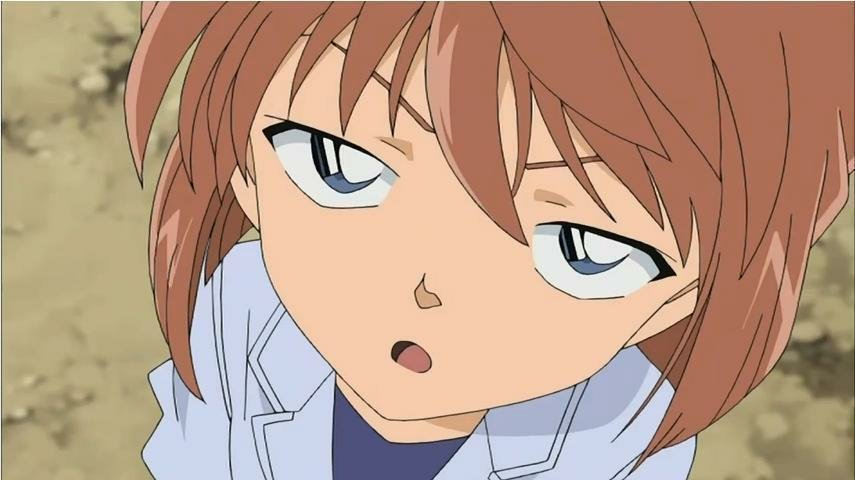

Tên tiếng Nhật: 江戸川 コナン (Edogawa Konan)
Tên tiếng Anh: Conan Edogawa
Tuổi:
6 – 7 tuổi (Từ tập 1 đến tập 434);
8 tuổi (từ tập 435).
Giới tính: Nam
Chiều cao: 95cm
Cân nặng: 18kg
Ngày sinh: 04/05/1983
Người thân: Bố: Kudo Yusaku; Mẹ: Kudo Yukiko
Nghề nghiệp: Thành viên Đội Thám tử nhí – Học sinh trường tiểu học
Biệt danh:
Cool Kid (Jodie Starling);
Cool Guy (Vermouth, James & Jodie);
Cậu bé Viên đạn bạc (Vermouth);
Thằng nhóc bốn mắt (Sonoko);
Đệ tử của Holmes (Apollo & Minerva Glass);
Nhóc thám tử (Kaito Kid).
Ran Mori là một nhân vật chính trong manga và anime Thám tử lừng danh Conan, còn được biết đến với tên gọi Rachel Moore trong bản lồng tiếng của Funimation. Ran là bạn thời niên thiếu và có tình cảm với Shinichi Kudo, và là con gái của thám tử tư Mouri Kogoro và nữ luật sư Kisaki Eri.
Haibara Ai (灰原はいばら 哀あい (Khôi Nguyên Ai)?), tên thật là Miyano Shiho (宮野みやの 志保しほ (Cung Dã Chí Bảo)?), là một nhân vật hư cấu và là người đã chế ra thuốc độc APTX 4869 (アポトキシン4869 Apotokishin yon-hachi-roku-kyu?, viết tắt của Apoptoxin 4869) trong bộ truyên Thám tử lừng danh Conan khiến Kudo Shinichi trở thành Edogawa Conan, cũng như trở thành nạn nhân đầu tiên của thuốc. Mật danh của cô trong Tổ chức Áo Đen là Sherry (シェリー Sherī?), cô hiện đã trốn khỏi tổ chức bởi viên thuốc APTX 4869 và sống ở nhà Tiến sĩ Agasa với tên là Ai Haibara. Cô cũng là một trong số ít nhân vật biết danh tính thật của Kudo Shinichi là Conan.
